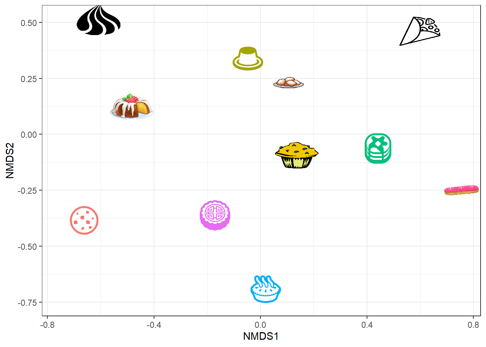
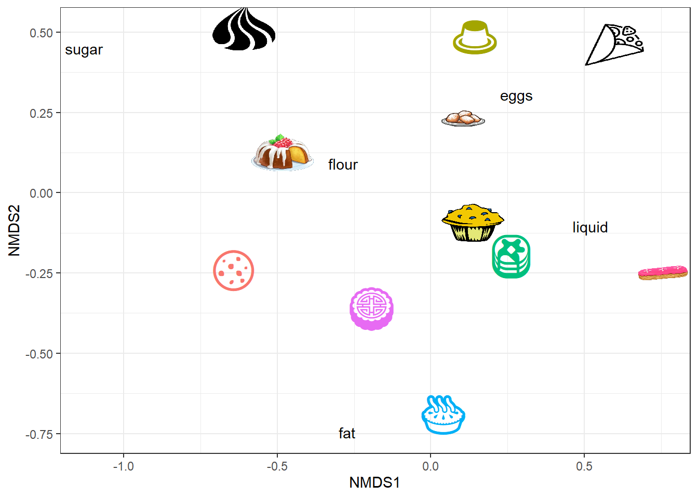

Multivariate
Ordinations
Many ecological analyses involve some sort of multivariate measurement of “species” within “sites”. For example, this might include counts of plant species along a sampling transect, relative sequencing abundance of bacterial species within a host gut, or chemical composition of soils.
The vegan package in R provides excellent tutorials and resources for conducting the appropriate analyses for a given multivariate problem. Here, we will simply explore different ways of visualizing these outputs.
Let’s start by simulating some data.
I’m a (very) amateur baker (read: I like to eat sweet things, but I don’t have a clue about how/why baking recipes work), so I collected some data about baking ratios for several common desserts:
# create the data frame
desserts = data.frame(dessert = c("pound_cake","pancakes","meringue","choux_pastry","pie","fritter", "cookie","custard","biscuit", "crepe","muffin"),
flour = c(2,1,2,0,1,3,2,3,3,0.5,2), sugar = c(1,0,2,0,0,0,1,0,0,0,0),
eggs = c(1,1,1,2,0,1,0,2,0,1,1), fat = c(1,0.5,0,1,2,0,2,0,1,0,1),
liquid = c(0,2,0,2,1,2,0,1,2,1,2))Now we will visualize these data using NMDS (Non-metric multidimensional scaling). We could also use a number of other multivariate methods (e.g. PCA, rda, dbrda, cca). A lot of ecological datasets violate assumptions of normality and often NMDS is a pretty robust method; therefore, we will work through this example using the metaMDS function in the vegan package.
# load vegan library
library(vegan)
# run NMDS
desord = metaMDS(desserts[,-1])## Run 0 stress 0.1036346
## Run 1 stress 0.1193745
## Run 2 stress 0.1599093
## Run 3 stress 0.1193745
## Run 4 stress 0.2185744
## Run 5 stress 0.1599095
## Run 6 stress 0.1383341
## Run 7 stress 0.1318933
## Run 8 stress 0.2145512
## Run 9 stress 0.1193745
## Run 10 stress 0.1193745
## Run 11 stress 0.1036346
## ... New best solution
## ... Procrustes: rmse 5.308841e-05 max resid 0.0001082056
## ... Similar to previous best
## Run 12 stress 0.1318934
## Run 13 stress 0.1193745
## Run 14 stress 0.1560745
## Run 15 stress 0.1193745
## Run 16 stress 0.1318933
## Run 17 stress 0.1318933
## Run 18 stress 0.1193745
## Run 19 stress 0.1193745
## Run 20 stress 0.1560745
## *** Solution reachedUnfortunately, the basic vegan plotting function doesn’t make a particularly compelling plot:
plot(desord)Not to fear! We can extract these data and make our own ggplot2-based plot.
# create dataframe using information stored as points in the NMDS object
dessert_data = data.frame(NMDS1 = desord$points[,1], NMDS2= desord$points[,2],
dessert = desserts$dessert)
head(dessert_data)## NMDS1 NMDS2 dessert
## 1 -0.48445817 0.1261681 pound_cake
## 2 0.36061015 -0.1195192 pancakes
## 3 -0.60828901 0.5137337 meringue
## 4 0.75160095 -0.2512626 choux_pastry
## 5 -0.06594436 -0.7494379 pie
## 6 0.10414654 0.2649741 fritter# create dataframe of ingredient information using the 'species' scores
ingredient_data = as.data.frame(scores(desord, "species"))
ingredient_data$ingredient = row.names(ingredient_data)
head(ingredient_data)## NMDS1 NMDS2 ingredient
## flour -0.2288987 0.1283651 flour
## sugar -1.1138371 0.4866317 sugar
## eggs 0.3352204 0.3436271 eggs
## fat -0.2236596 -0.7130368 fat
## liquid 0.4657303 -0.1422847 liquidNow we can make a plot:
# First, let's visualize the desserts in 2-D space
ggplot(dessert_data, aes(x=NMDS1, y=NMDS2))+
geom_point(aes(col=dessert))+
geom_text(aes(label=dessert, col=dessert), nudge_y = -0.025)+
theme_bw(base_size=14)It’s a bit annoying that some of our labels are not entirely visible. One easy solution is to use the ggrepel package:
library(ggrepel)
ggplot(dessert_data, aes(x=NMDS1, y=NMDS2))+
geom_point(aes(col=dessert))+
geom_text_repel(aes(label=dessert, col=dessert))+
theme_bw(base_size=14)Let’s say that we want to get really fancy and substitute icons for each of our points. R has several different shapes that we could use, but none of them are particularly representative of our desserts. However, we can take advantage of a) emojis or b) MAKING OUR OWN ICONS!!!
First, let’s install the emo package
#remotes::install_github("hadley/emo")
library(emo)This is a pretty cool package that will retrieve color emojis given a keyword. For example:
ji("cake")## <U+0001F370>If we want to see all the emojis, we can access the ji_keyword object
head(summary(ji_keyword))## Length Class Mode
## 12 -none- character
## -1 1 -none- character
## “acceptable” 1 -none- character
## “application” 1 -none- character
## “bargain” 1 -none- character
## “congratulations” 1 -none- characterdim(summary(ji_keyword)) # there are over 5000 keywords## [1] 5586 3Let’s see if we can find some good emojis for our desserts
ji("cake")
ji("cloud") # for meringue
ji("custard")
ji("pancake")
ji("pie")
ji("cupcake") # for muffin
ji("cookie")
ji("bread") # for choux
ji("hotdog") # for fritter
ji("circle") # for crepe
ji("moon_cake") # for biscuit
ji("doughnut") # for pound cakeNow we can map these to values
library(purrr)
library(dplyr)
# create a new column with our substitue names
dessert_data = dessert_data %>%
mutate(dessert_id2 = dessert) %>%
mutate(dessert_id2 = recode(dessert_id2, meringue="cloud", muffin="cupcake",
fritter="hotdog", crepe="circle", biscuit="moon_cake", pound_cake="doughnut", choux_pastry="bread")) %>%
mutate(emoji = map_chr(dessert_id2, ji))
head(dessert_data)## NMDS1 NMDS2 dessert dessert_id2 emoji
## 1 -0.48445817 0.1261681 pound_cake doughnut <U+0001F369>
## 2 0.36061015 -0.1195192 pancakes pancakes <U+0001F95E>
## 3 -0.60828901 0.5137337 meringue cloud <U+2601><U+FE0F>
## 4 0.75160095 -0.2512626 choux_pastry bread <U+0001F35E>
## 5 -0.06594436 -0.7494379 pie pie <U+0001F967>
## 6 0.10414654 0.2649741 fritter hotdog <U+0001F32D>ggplot(dessert_data, aes(x = NMDS1, y = NMDS2))+
geom_text(aes(label=emoji, col=emoji))+
geom_text_repel(aes(label=dessert))+
guides(col="none")+
theme_bw()Hooray!
So obviously, not all of these are perfect substitutes. What if we could substitute in our OWN icons? WHAT?
To do this, we can take advantage of the ggimage package:
library(ggimage)We now need to find some images to use! I created a folder (named “baking_pics”) to store my images.
# store file paths to images
images = list.files("baking_pics/")
images = paste("baking_pics/", images, sep="")
# substitute the image file in the dessert data frame
dessert_data = dessert_data %>%
mutate(picture = NA)
dessert_data$picture[grep("crepe",dessert_data$dessert)] = "baking_pics/crepe.png"
dessert_data$picture[grep("fritter",dessert_data$dessert)] = "baking_pics/fritter.png"
dessert_data$picture[grep("choux_pastry",dessert_data$dessert)] = "baking_pics/eclair.png"
dessert_data$picture[grep("pound_cake",dessert_data$dessert)] = "baking_pics/poundcake.png"
dessert_data$picture[grep("meringue",dessert_data$dessert)] = "baking_pics/meringue.png"
dessert_data$picture[grep("muffin",dessert_data$dessert)] = "baking_pics/muffin.png"Before plotting the emojis and pictures together, let’s now mutate the bad/fake emojis to NA:
dessert_data = dessert_data %>%
mutate_at(vars(emoji), funs(ifelse(is.na(picture), ., NA)))Now let’s plot them together!
ggplot(dessert_data, aes(x=NMDS1, y=NMDS2))+
geom_image(aes(image = picture),size=0.1)+
geom_text_repel(aes(label = emoji, col=emoji), size=12)+
guides(col="none")+
theme_bw()
Alright!
Granted, this does look heinous, but if you are a talented artist, you can see how this method is great for automatically adding your own artwork to figures so that you don’t have to futz around in powerpoint or illustrator :)
The last step that I’ll cover is adding the ingredient information to plot.
head(ingredient_data)## NMDS1 NMDS2 ingredient
## flour -0.2288987 0.1283651 flour
## sugar -1.1138371 0.4866317 sugar
## eggs 0.3352204 0.3436271 eggs
## fat -0.2236596 -0.7130368 fat
## liquid 0.4657303 -0.1422847 liquidWe can do this by simply adding another layer to the plot:
ggplot(dessert_data, aes(x=NMDS1, y=NMDS2))+
geom_image(aes(image = picture),size=0.1)+
geom_text_repel(aes(label = emoji, col=emoji), size=12)+
geom_text_repel(data=ingredient_data, aes(x=NMDS1, y=NMDS2, label=ingredient))+
guides(col="none")+
theme_bw()
And just because we can, let’s play with the fonts.
You can check out the fonts installed on your (Windows) system using:
windowsFonts()## $serif
## [1] "TT Times New Roman"
##
## $sans
## [1] "TT Arial"
##
## $mono
## [1] "TT Courier New"
##
## $`Agency FB`
## [1] "Agency FB"
##
## $Algerian
## [1] "Algerian"
##
## $`Arial Black`
## [1] "Arial Black"
##
## $Arial
## [1] "Arial"
##
## $`Arial Narrow`
## [1] "Arial Narrow"
##
## $`Arial Rounded MT Bold`
## [1] "Arial Rounded MT Bold"
##
## $Bahnschrift
## [1] "Bahnschrift"
##
## $`Baskerville Old Face`
## [1] "Baskerville Old Face"
##
## $`Bauhaus 93`
## [1] "Bauhaus 93"
##
## $`Bell MT`
## [1] "Bell MT"
##
## $`Berlin Sans FB`
## [1] "Berlin Sans FB"
##
## $`Berlin Sans FB Demi`
## [1] "Berlin Sans FB Demi"
##
## $`Bernard MT Condensed`
## [1] "Bernard MT Condensed"
##
## $`Blackadder ITC`
## [1] "Blackadder ITC"
##
## $`Bodoni MT`
## [1] "Bodoni MT"
##
## $`Bodoni MT Black`
## [1] "Bodoni MT Black"
##
## $`Bodoni MT Condensed`
## [1] "Bodoni MT Condensed"
##
## $`Bodoni MT Poster Compressed`
## [1] "Bodoni MT Poster Compressed"
##
## $`Book Antiqua`
## [1] "Book Antiqua"
##
## $`Bookman Old Style`
## [1] "Bookman Old Style"
##
## $`Bookshelf Symbol 7`
## [1] "Bookshelf Symbol 7"
##
## $`Bradley Hand ITC`
## [1] "Bradley Hand ITC"
##
## $`Britannic Bold`
## [1] "Britannic Bold"
##
## $Broadway
## [1] "Broadway"
##
## $`Brush Script MT`
## [1] "Brush Script MT"
##
## $Calibri
## [1] "Calibri"
##
## $`Calibri Light`
## [1] "Calibri Light"
##
## $`Californian FB`
## [1] "Californian FB"
##
## $`Calisto MT`
## [1] "Calisto MT"
##
## $Cambria
## [1] "Cambria"
##
## $Candara
## [1] "Candara"
##
## $`Candara Light`
## [1] "Candara Light"
##
## $Castellar
## [1] "Castellar"
##
## $Centaur
## [1] "Centaur"
##
## $Century
## [1] "Century"
##
## $`Century Gothic`
## [1] "Century Gothic"
##
## $`Century Schoolbook`
## [1] "Century Schoolbook"
##
## $Chiller
## [1] "Chiller"
##
## $`Colonna MT`
## [1] "Colonna MT"
##
## $`Comic Sans MS`
## [1] "Comic Sans MS"
##
## $Consolas
## [1] "Consolas"
##
## $Constantia
## [1] "Constantia"
##
## $`Cooper Black`
## [1] "Cooper Black"
##
## $`Copperplate Gothic Bold`
## [1] "Copperplate Gothic Bold"
##
## $`Copperplate Gothic Light`
## [1] "Copperplate Gothic Light"
##
## $Corbel
## [1] "Corbel"
##
## $`Corbel Light`
## [1] "Corbel Light"
##
## $`Courier New`
## [1] "Courier New"
##
## $`Curlz MT`
## [1] "Curlz MT"
##
## $Dubai
## [1] "Dubai"
##
## $`Dubai Light`
## [1] "Dubai Light"
##
## $`Dubai Medium`
## [1] "Dubai Medium"
##
## $Ebrima
## [1] "Ebrima"
##
## $`Edwardian Script ITC`
## [1] "Edwardian Script ITC"
##
## $Elephant
## [1] "Elephant"
##
## $`Engravers MT`
## [1] "Engravers MT"
##
## $`Eras Bold ITC`
## [1] "Eras Bold ITC"
##
## $`Eras Demi ITC`
## [1] "Eras Demi ITC"
##
## $`Eras Light ITC`
## [1] "Eras Light ITC"
##
## $`Eras Medium ITC`
## [1] "Eras Medium ITC"
##
## $`Felix Titling`
## [1] "Felix Titling"
##
## $`Footlight MT Light`
## [1] "Footlight MT Light"
##
## $Forte
## [1] "Forte"
##
## $`Franklin Gothic Book`
## [1] "Franklin Gothic Book"
##
## $`Franklin Gothic Demi`
## [1] "Franklin Gothic Demi"
##
## $`Franklin Gothic Demi Cond`
## [1] "Franklin Gothic Demi Cond"
##
## $`Franklin Gothic Heavy`
## [1] "Franklin Gothic Heavy"
##
## $`Franklin Gothic Medium`
## [1] "Franklin Gothic Medium"
##
## $`Franklin Gothic Medium Cond`
## [1] "Franklin Gothic Medium Cond"
##
## $`Freestyle Script`
## [1] "Freestyle Script"
##
## $`French Script MT`
## [1] "French Script MT"
##
## $Gabriola
## [1] "Gabriola"
##
## $Gadugi
## [1] "Gadugi"
##
## $Garamond
## [1] "Garamond"
##
## $Georgia
## [1] "Georgia"
##
## $Gigi
## [1] "Gigi"
##
## $`Gill Sans Ultra Bold`
## [1] "Gill Sans Ultra Bold"
##
## $`Gill Sans Ultra Bold Condensed`
## [1] "Gill Sans Ultra Bold Condensed"
##
## $`Gill Sans MT`
## [1] "Gill Sans MT"
##
## $`Gill Sans MT Condensed`
## [1] "Gill Sans MT Condensed"
##
## $`Gill Sans MT Ext Condensed Bold`
## [1] "Gill Sans MT Ext Condensed Bold"
##
## $`Gloucester MT Extra Condensed`
## [1] "Gloucester MT Extra Condensed"
##
## $`Goudy Old Style`
## [1] "Goudy Old Style"
##
## $`Goudy Stout`
## [1] "Goudy Stout"
##
## $Haettenschweiler
## [1] "Haettenschweiler"
##
## $`Harlow Solid Italic`
## [1] "Harlow Solid Italic"
##
## $Harrington
## [1] "Harrington"
##
## $`High Tower Text`
## [1] "High Tower Text"
##
## $`HoloLens MDL2 Assets`
## [1] "HoloLens MDL2 Assets"
##
## $Impact
## [1] "Impact"
##
## $`Imprint MT Shadow`
## [1] "Imprint MT Shadow"
##
## $`Informal Roman`
## [1] "Informal Roman"
##
## $`Ink Free`
## [1] "Ink Free"
##
## $`Javanese Text`
## [1] "Javanese Text"
##
## $Jokerman
## [1] "Jokerman"
##
## $`Juice ITC`
## [1] "Juice ITC"
##
## $`Kristen ITC`
## [1] "Kristen ITC"
##
## $`Kunstler Script`
## [1] "Kunstler Script"
##
## $`Wide Latin`
## [1] "Wide Latin"
##
## $Leelawadee
## [1] "Leelawadee"
##
## $`Leelawadee UI`
## [1] "Leelawadee UI"
##
## $`Leelawadee UI Semilight`
## [1] "Leelawadee UI Semilight"
##
## $`Lucida Bright`
## [1] "Lucida Bright"
##
## $`Lucida Calligraphy`
## [1] "Lucida Calligraphy"
##
## $`Lucida Console`
## [1] "Lucida Console"
##
## $`Lucida Fax`
## [1] "Lucida Fax"
##
## $`Lucida Handwriting`
## [1] "Lucida Handwriting"
##
## $`Lucida Sans`
## [1] "Lucida Sans"
##
## $`Lucida Sans Typewriter`
## [1] "Lucida Sans Typewriter"
##
## $`Lucida Sans Unicode`
## [1] "Lucida Sans Unicode"
##
## $Magneto
## [1] "Magneto"
##
## $`Maiandra GD`
## [1] "Maiandra GD"
##
## $`Malgun Gothic`
## [1] "Malgun Gothic"
##
## $`Malgun Gothic Semilight`
## [1] "Malgun Gothic Semilight"
##
## $Marlett
## [1] "Marlett"
##
## $`Matura MT Script Capitals`
## [1] "Matura MT Script Capitals"
##
## $`Microsoft Himalaya`
## [1] "Microsoft Himalaya"
##
## $`Microsoft Yi Baiti`
## [1] "Microsoft Yi Baiti"
##
## $`Microsoft New Tai Lue`
## [1] "Microsoft New Tai Lue"
##
## $`Microsoft PhagsPa`
## [1] "Microsoft PhagsPa"
##
## $`Microsoft Sans Serif`
## [1] "Microsoft Sans Serif"
##
## $`Microsoft Tai Le`
## [1] "Microsoft Tai Le"
##
## $`Microsoft Uighur`
## [1] "Microsoft Uighur"
##
## $Mistral
## [1] "Mistral"
##
## $`Modern No. 20`
## [1] "Modern No. 20"
##
## $`Mongolian Baiti`
## [1] "Mongolian Baiti"
##
## $`Monotype Corsiva`
## [1] "Monotype Corsiva"
##
## $`MS Outlook`
## [1] "MS Outlook"
##
## $`MS Reference Sans Serif`
## [1] "MS Reference Sans Serif"
##
## $`MS Reference Specialty`
## [1] "MS Reference Specialty"
##
## $`MT Extra`
## [1] "MT Extra"
##
## $`MV Boli`
## [1] "MV Boli"
##
## $`Myanmar Text`
## [1] "Myanmar Text"
##
## $`Niagara Engraved`
## [1] "Niagara Engraved"
##
## $`Niagara Solid`
## [1] "Niagara Solid"
##
## $`Nirmala UI`
## [1] "Nirmala UI"
##
## $`Nirmala UI Semilight`
## [1] "Nirmala UI Semilight"
##
## $`OCR A Extended`
## [1] "OCR A Extended"
##
## $`Old English Text MT`
## [1] "Old English Text MT"
##
## $Onyx
## [1] "Onyx"
##
## $`Palace Script MT`
## [1] "Palace Script MT"
##
## $`Palatino Linotype`
## [1] "Palatino Linotype"
##
## $Papyrus
## [1] "Papyrus"
##
## $Parchment
## [1] "Parchment"
##
## $Perpetua
## [1] "Perpetua"
##
## $`Perpetua Titling MT`
## [1] "Perpetua Titling MT"
##
## $Playbill
## [1] "Playbill"
##
## $`Poor Richard`
## [1] "Poor Richard"
##
## $Pristina
## [1] "Pristina"
##
## $`Rage Italic`
## [1] "Rage Italic"
##
## $Ravie
## [1] "Ravie"
##
## $Rockwell
## [1] "Rockwell"
##
## $`Rockwell Condensed`
## [1] "Rockwell Condensed"
##
## $`Rockwell Extra Bold`
## [1] "Rockwell Extra Bold"
##
## $`Script MT Bold`
## [1] "Script MT Bold"
##
## $`Segoe MDL2 Assets`
## [1] "Segoe MDL2 Assets"
##
## $`Segoe Print`
## [1] "Segoe Print"
##
## $`Segoe Script`
## [1] "Segoe Script"
##
## $`Segoe UI`
## [1] "Segoe UI"
##
## $`Segoe UI Light`
## [1] "Segoe UI Light"
##
## $`Segoe UI Semibold`
## [1] "Segoe UI Semibold"
##
## $`Segoe UI Semilight`
## [1] "Segoe UI Semilight"
##
## $`Segoe UI Black`
## [1] "Segoe UI Black"
##
## $`Segoe UI Emoji`
## [1] "Segoe UI Emoji"
##
## $`Segoe UI Historic`
## [1] "Segoe UI Historic"
##
## $`Segoe UI Symbol`
## [1] "Segoe UI Symbol"
##
## $`Showcard Gothic`
## [1] "Showcard Gothic"
##
## $`SimSun-ExtB`
## [1] "SimSun-ExtB"
##
## $`Snap ITC`
## [1] "Snap ITC"
##
## $Stencil
## [1] "Stencil"
##
## $Sylfaen
## [1] "Sylfaen"
##
## $Symbol
## [1] "Symbol"
##
## $Tahoma
## [1] "Tahoma"
##
## $`Tempus Sans ITC`
## [1] "Tempus Sans ITC"
##
## $`Times New Roman`
## [1] "Times New Roman"
##
## $`Trebuchet MS`
## [1] "Trebuchet MS"
##
## $`Tw Cen MT`
## [1] "Tw Cen MT"
##
## $`Tw Cen MT Condensed`
## [1] "Tw Cen MT Condensed"
##
## $`Tw Cen MT Condensed Extra Bold`
## [1] "Tw Cen MT Condensed Extra Bold"
##
## $Verdana
## [1] "Verdana"
##
## $`Viner Hand ITC`
## [1] "Viner Hand ITC"
##
## $Vivaldi
## [1] "Vivaldi"
##
## $`Vladimir Script`
## [1] "Vladimir Script"
##
## $Webdings
## [1] "Webdings"
##
## $Wingdings
## [1] "Wingdings"
##
## $`Wingdings 2`
## [1] "Wingdings 2"
##
## $`Wingdings 3`
## [1] "Wingdings 3"
##
## $ZWAdobeF
## [1] "ZWAdobeF"This isn’t exactly a huge array of options. But we can use the extrafont package to have access to some more:
# install this dependency before loading the package
#remotes::install_version("Rttf2pt1", version = "1.3.8")
library(extrafont)
# need to import and load the fonts - this will take a few minutes but only has to be done once
#font_import()
#loadfonts(device="win")
head(windowsFonts())## $serif
## [1] "TT Times New Roman"
##
## $sans
## [1] "TT Arial"
##
## $mono
## [1] "TT Courier New"
##
## $`Agency FB`
## [1] "Agency FB"
##
## $Algerian
## [1] "Algerian"
##
## $`Arial Black`
## [1] "Arial Black"# hooray! fonts!Let’s pick some zany fonts for our ingredients
# make a vector
font_vec = c("Papyrus", "Jokerman", "Bauhaus 93", "Goudy Stout", "Blackadder ITC")
ggplot(dessert_data, aes(x=NMDS1, y=NMDS2))+
geom_image(aes(image = picture),size=0.1)+
geom_text_repel(aes(label = emoji, col=emoji), size=12)+
geom_text_repel(data=ingredient_data, aes(x=NMDS1, y=NMDS2, label=ingredient,
family=font_vec))+
guides(col="none")+
theme_bw()
Yes, that’s right, I used Papyrus.